Quiz de Enfriamiento · Ley de Enfriamiento de Newton
Instructivo de uso. Cómo operar el laboratorio virtual de transferencia de calor, cómo leer cada dato, gráfica y tabla, y cómo presentarlo paso a paso.
Un laboratorio virtual de enfriamiento y calentamiento de metales, con datos físicos reales.
El profesor mostró la Ley de Enfriamiento de Newton con una taza de café. Este simulador aplica la misma ley a un caso de ingeniería: el temple de piezas metálicas. Una pieza al rojo vivo se sumerge en aire, aceite, agua u otro medio, y el simulador muestra cómo cambia su temperatura con el tiempo.
La idea central es sencilla: la rapidez con que cambia la temperatura es proporcional a la diferencia entre la pieza y el medio.
dT/dt = −k (T − Tₘ) ⟹ T(t) = Tₘ + (T₀ − Tₘ)·e−kt
La diferencia con un ejercicio común es que aquí k no se inventa: se calcula con las propiedades reales del metal (densidad ρ y calor específico c), el coeficiente de convección h del medio y la geometría de la pieza:
k = h·A / (ρ·c·V)
Por eso el tiempo que muestra el simulador es tiempo real, en segundos.
index.html.Si solo tienes un minuto, haz esto.
La página se lee de arriba hacia abajo, en 9 secciones numeradas.
| # | Sección | Para qué sirve |
|---|---|---|
| — | Encabezado | Título, autores y botones de ayuda: recorrido guiado, instructivo y PDF. |
| 1 | Escenario y controles | Escenarios listos, geometría, velocidad, visualización e Iniciar, Pausar y Reiniciar. |
| — | Barra de estado | Estado, tiempo, velocidad y tiempo total al equilibrio. |
| 2 | Tres experimentos | Configuración, escena animada y lecturas de A, B y C. |
| 3 | Temperatura vs tiempo | Gráfica en vivo de las tres curvas. |
| 🔍 | Experimento en foco | Elige cuál experimento se analiza en las secciones 4 a 7. |
| 4 | Potencia y energía | La integral Q = ∫ q dt como un área que crece. |
| 5 | Matemática paso a paso | Diez pasos con las fórmulas y los números del momento. |
| 6 | Tabla comparativa | Mediciones de los tres experimentos cada Δt. |
| 7 | Análisis tipo informe | k experimental calculada con tres métodos. |
| 8 | Tablas de propiedades | Datos científicos de metales y medios. |
| 9 | Validez del modelo | Hasta dónde vale la Ley de Newton. |
Aquí se decide qué se simula y cómo se ve.
Cada botón carga un experimento completo en las tres tarjetas. Son ideales para presentar:
| Escenario | Qué se simula | Qué demuestra |
|---|---|---|
| 🔥 Temple clásico | Acero 1010 a 900 °C en aire quieto, aceite y agua. | El medio lo cambia todo: el agua enfría en segundos y el aire tarda más de una hora. |
| ⚔️ Duelo de metales | Cobre, acero y aluminio a 500 °C en agua. | El aluminio cambia de temperatura más rápido porque su ρ·c es menor, aunque el cobre conduce mejor. |
| 🧪 Polímero vs agua vs salmuera | Acero a 850 °C en tres medios severos. | La salmuera no forma capa de vapor, por eso enfría más rápido que el agua. |
| ♨️ Ganar calor | Piezas a 25 °C dentro de un horno a 850 °C. | La misma ley sirve para calentar: la curva sube y es cóncava hacia abajo. |
| 🧊 Criogenia | Cobre y acero en nitrógeno líquido a −196 °C, y aluminio a −196 °C al aire. | Temperaturas bajo cero, capa de vapor y escarcha en una pieza helada. |
La pieza es un cilindro. Digita el diámetro D y el largo L en milímetros. Debajo aparecen el área A (incluye las dos tapas), el volumen V y la longitud característica Lc = V/A. El dibujo de la pieza cambia de proporción según D y L.
| Modo | Cómo funciona |
|---|---|
| Automática | Es un time-lapse progresivo. Empieza lento para que se vea el medio más rápido, como el agua, y acelera de forma exponencial para que el más lento, como el aire, termine en unos 30 segundos reales. La velocidad actual aparece en la barra de estado. |
| Manual | Tú eliges un multiplicador fijo entre ×0.1 (cámara lenta) y ×1000. Se puede cambiar mientras corre la simulación. |
| Opción | Qué hace |
|---|---|
| Vista de cámara térmica | Pinta la escena con la paleta ironbow de una cámara infrarroja: negro y morado = frío, amarillo y blanco = caliente. Aparece una barra de escala con la temperatura mínima y máxima. |
| Tiempo en escala logarítmica | Cambia el eje horizontal de la gráfica 3. Sirve para comparar medios cuyos tiempos difieren mucho (segundos contra horas). |
| Modo laboratorio | Agrega a las mediciones de las tablas y de la gráfica el ruido de un sensor tipo termopar K: ±(0.3 °C + 0.5 % de la lectura). Debajo de cada medición aparece en gris la temperatura real. Las escenas y las curvas siguen siendo exactas. |
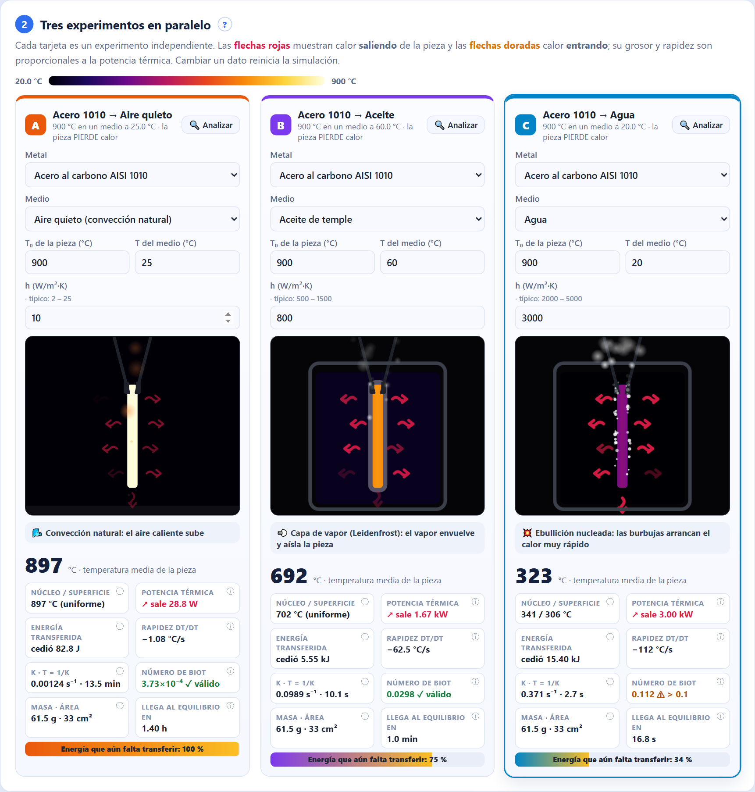
La franja que está justo debajo de los controles.
| Elemento | Significado |
|---|---|
| Estado | Listo para iniciar, Simulando…, Pausado o Equilibrio térmico alcanzado ✓. En rojo avisa que algún experimento tiene datos inválidos. |
| ⏱ Tiempo | Tiempo físico transcurrido en el experimento (s, min u h), no el tiempo que llevas mirando la pantalla. |
| ⚡ Velocidad | Cuántas veces más rápido que la realidad avanza la simulación en este momento. |
| 🏁 Equilibrio total | Tiempo físico que tarda el experimento más lento en llegar al equilibrio. |
Tres tarjetas (A, B y C), cada una un experimento independiente.
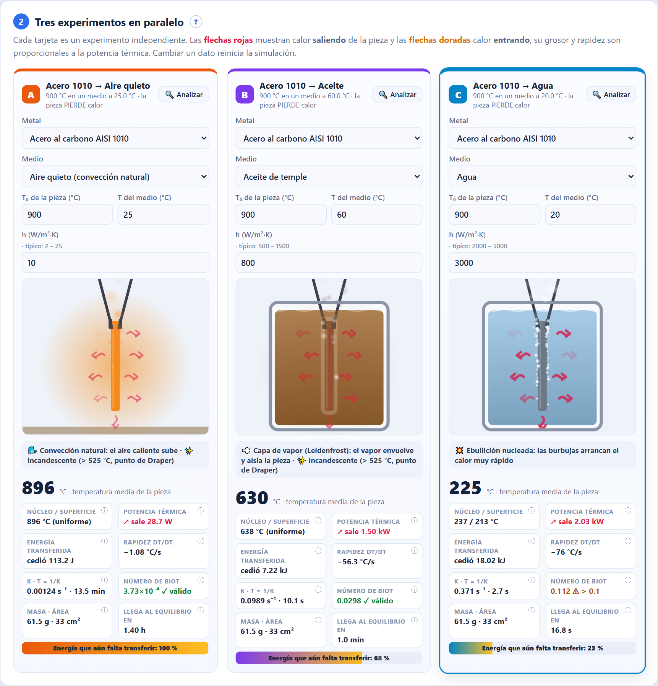
| Campo | Qué significa |
|---|---|
| Metal | Material de la pieza. Hay 11 metales de tabla y la opción Metal personalizado, que permite digitar ρ, c, k y la temperatura de fusión. |
| Medio | Dónde se enfría o calienta la pieza. Al cambiarlo se rellenan su temperatura y su h típicos. Con Medio personalizado digitas h y la temperatura tú mismo. |
| T₀ de la pieza | Temperatura inicial de la pieza en °C. |
| T del medio | Temperatura del aire, del baño o del horno (Tₘ). Si es mayor que T₀, la pieza gana calor. |
| h (W/m²·K) | Coeficiente de convección: qué tan bien el medio extrae (o entrega) calor. Al lado aparece el rango típico de ese medio. |
Si un dato no tiene sentido físico, la tarjeta se pone en gris, muestra un mensaje en rojo y ese experimento no se simula:
La letra (A, B o C) tiene el color de su curva en la gráfica. El título dice metal → medio y el subtítulo indica si la pieza pierde o gana calor. El botón 🔍 Analizar pone ese experimento en foco y te lleva a la matemática.
Cada elemento del dibujo representa algo físico.
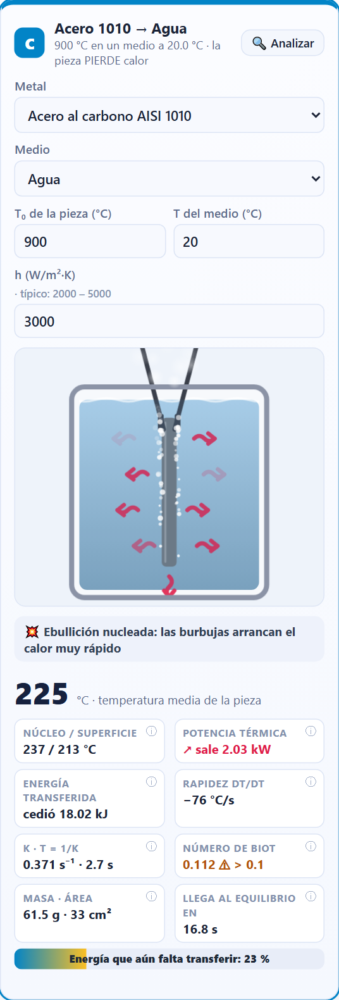
| Lo que ves | Qué significa |
|---|---|
| Color del metal | Frío, tiene su color natural (gris acero, cobre, dorado…). Desde 525 °C (punto de Draper) empieza a brillar: rojo oscuro → rojo cereza → naranja → amarillo → blanco. Es la escala real que usan los herreros. |
| Resplandor | El halo alrededor de la pieza crece con la temperatura. |
| Centro más claro que los bordes | Gradiente núcleo/superficie. Aparece cuando Biot ≥ 0.1: el interior se enfría más lento que la superficie. |
| Flechas rojas hacia afuera | Calor saliendo de la pieza. Más gruesas y rápidas = más potencia. |
| Flechas doradas hacia adentro | Calor entrando a la pieza (horno, o pieza helada al aire). |
| Contorno blanco que tiembla | Capa de vapor (Leidenfrost): el líquido hierve tan fuerte que una película de vapor envuelve la pieza y la aísla. |
| Muchas burbujas pequeñas | Ebullición nucleada: la etapa que más calor extrae en un temple real. |
| Nubes sobre el líquido | Vapor de agua, o humo gris en el caso del aceite. |
| Manchas naranja o azul que suben o bajan | Convección: el fluido calentado sube (naranja) y el enfriado baja (azul). |
| Chispas | En aire, sobre 650 °C: cascarilla incandescente que se desprende. |
| Niebla blanca | Nitrógeno líquido evaporándose. |
| Capa blanca punteada sobre la pieza | Escarcha: una pieza bajo 0 °C al aire condensa y congela la humedad. |
| Ventilador y líneas de aire | Convección forzada (medio: aire forzado). |
| Horno de ladrillo | Las paredes brillan según la temperatura del horno y la pieza descansa sobre un soporte. |
Debajo de la escena, un texto describe lo que pasa en ese momento: 💨 capa de vapor, 💥 ebullición nucleada, 🌊 convección en líquido, 🌬️ convección natural, 🌀 convección forzada, ♨️ calentamiento en horno o ✓ equilibrio. También avisa ✨ incandescente sobre 525 °C y ❄ escarcha bajo 0 °C.
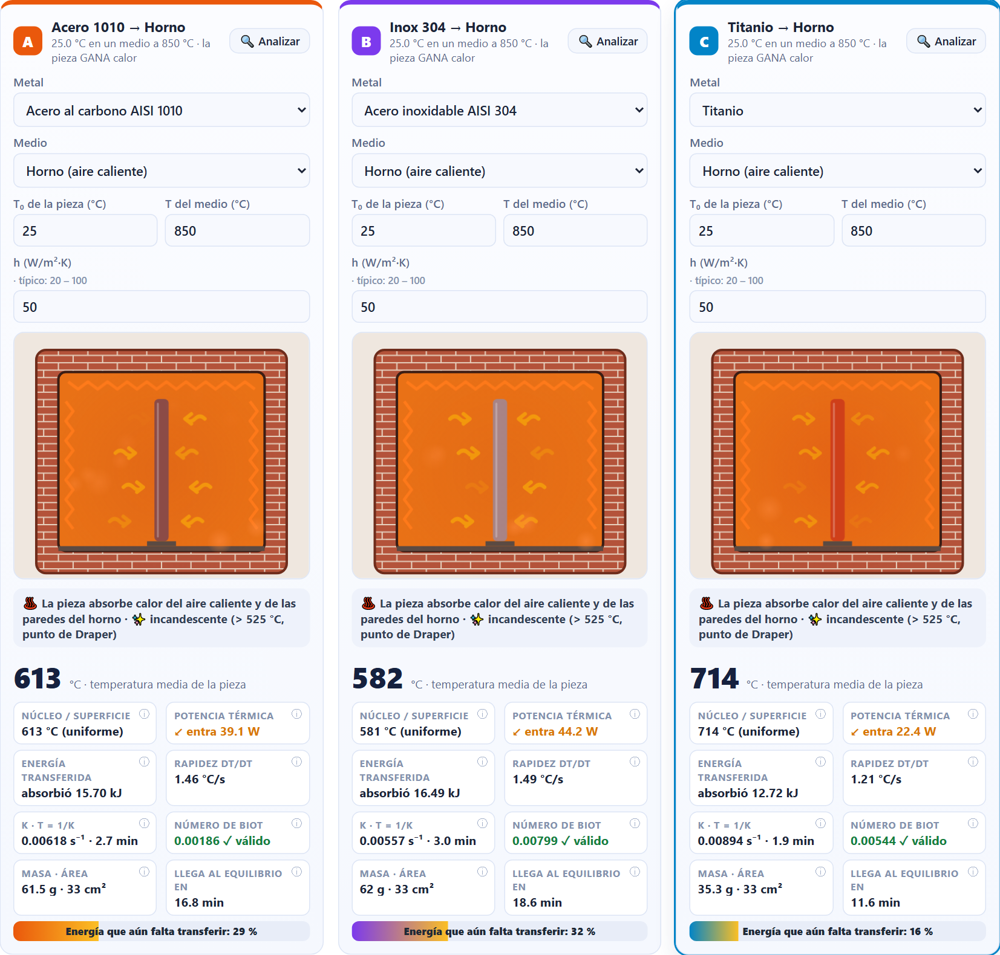
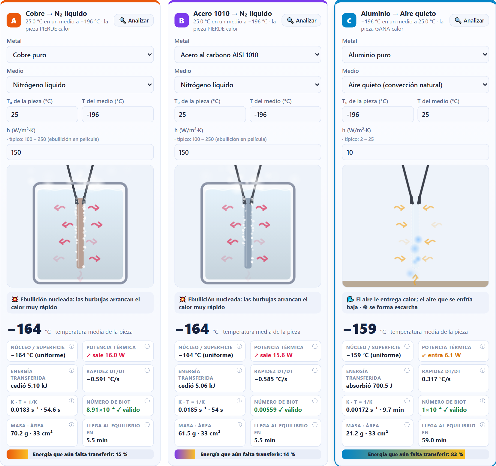
Debajo de la escena. Si pasas el mouse sobre una lectura, aparece su explicación.
| Lectura | Fórmula | Cómo interpretarla |
|---|---|---|
| Temperatura media | T = Tₘ + (T₀ − Tₘ)e−kt | El número grande. Es la temperatura de la pieza según la Ley de Newton. |
| Núcleo / superficie | Solución de un término del cilindro | Si Biot < 0.1 muestra un solo valor (“uniforme”). Si no, muestra dos: el centro más caliente y la superficie más fría. |
| Potencia térmica | q = hA(T − Tₘ) | Julios por segundo (W) que cruzan la superficie. ↗ sale = pierde calor; ↙ entra = gana calor. |
| Energía transferida | Q = mc(T₀ − T) | Energía total cedida o absorbida desde t = 0. |
| Rapidez dT/dt | dT/dt = −k(T − Tₘ) | Grados por segundo. Negativa = se enfría; positiva = se calienta. Es máxima al inicio. |
| k · τ | k = hA/(ρcV), τ = 1/k | k es la constante de la ley (s⁻¹). En τ segundos la diferencia con el medio cae al 37 %. |
| Número de Biot | Bi = hLc/kmetal | ✓ válido si Bi < 0.1; ⚠ si no (ver capítulo 16). |
| Masa · área | m = ρV | Masa de la pieza en gramos y área de su superficie en cm². |
| Llega al equilibrio en | t = ln(|ΔT₀|/ε)/k | Tiempo hasta quedar a menos de 0.2 % (mínimo 0.5 °C) de Tₘ. |
| Barra de energía | |T − Tₘ| / |T₀ − Tₘ| | Porcentaje de la diferencia inicial que aún falta cerrar. Termina en 0 %. |
La gráfica principal, dibujada en vivo.
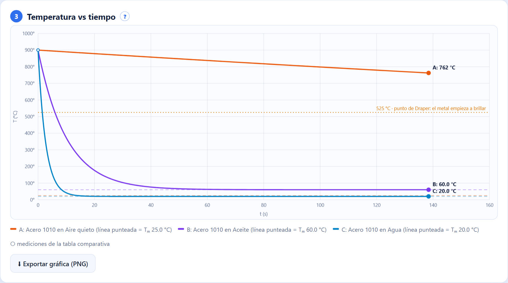
| Elemento | Significado |
|---|---|
| Curva de color | Temperatura de un experimento. El color coincide con la letra de su tarjeta: A, B y C. |
| Línea punteada del mismo color | Temperatura del medio (Tₘ) de ese experimento: la curva se acerca a ella sin cruzarla nunca (asíntota). |
| Círculos blancos | Mediciones de la tabla comparativa (sección 6), cada Δt. Con modo laboratorio se ven dispersas por el ruido. |
| Línea naranja punteada | 525 °C, el punto de Draper, donde un metal empieza a verse brillar. |
| Línea azul “0 °C” | Aparece cuando hay temperaturas bajo cero (criogenia). |
| Punto con etiqueta | Valor actual de cada experimento. |
| Eje horizontal | En escala lineal se amplía a medida que avanza el tiempo. En logarítmica (opción de la sección 1) se comparan mejor medios muy rápidos y muy lentos. |
El botón ⬇ Exportar gráfica (PNG) descarga la imagen para un informe o una presentación.
La barra 🔍 que queda fija arriba mientras bajas por la página.
Las secciones 4, 5, 6 y 7 estudian a fondo un experimento. Elige cuál con los botones A, B o C, o con el botón 🔍 Analizar de cualquier tarjeta. La tarjeta en foco queda resaltada con un borde de su color.
La forma más visual de entender una integral.
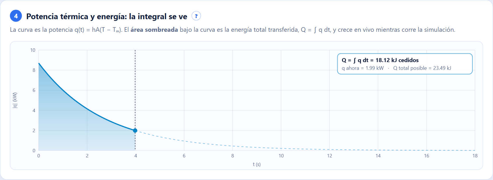
Diez pasos con las fórmulas y los números reales del experimento en foco, recalculados en vivo.
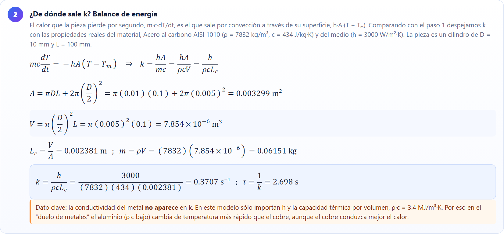
| Paso | Qué muestra |
|---|---|
| 1 · Modelo | La ecuación diferencial dT/dt = −k(T − Tₘ) y su relación con la forma del informe (k negativa). |
| 2 · ¿De dónde sale k? | Balance de energía mc·dT/dt = −hA(T − Tₘ), cálculo de A, V, Lc y m, y el valor de k y τ. |
| 3 · Separación de variables | dT/(T − Tₘ) = −k dt. |
| 4 · Integración definida | Integrales de T₀ a T y de 0 a t, y aplicación de la regla de Barrow. |
| 5 · Despeje | Propiedades del logaritmo y la exponencial, y la solución T(t) con sus números. |
| 6 · Evaluación | Cálculo de T en el instante actual, operación por operación. |
| 7 · Derivadas | Primera derivada (rapidez, máxima al inicio), segunda derivada (concavidad) y verificación de que la solución cumple la ecuación. |
| 8 · Potencia y energía | Integral de la potencia, antiderivada de la exponencial, y comprobación con mc(T₀ − T) y la energía total Q∞. |
| 9 · Tiempo objetivo | Despeje de t* para llegar a una temperatura T* y la vida media t½ = ln 2 / k. |
| 10 · Validez | Número de Biot y, si hace falta, la raíz ζ₁ del cilindro con la estimación de núcleo y superficie. |
Arriba de los pasos está la casilla Temperatura objetivo T*. Digita una temperatura entre T₀ y Tₘ y pulsa Enter: el paso 9 calcula exactamente cuántos segundos tarda la pieza en llegar a ella.
Las “mediciones” de los tres experimentos, al estilo de la tabla del informe.
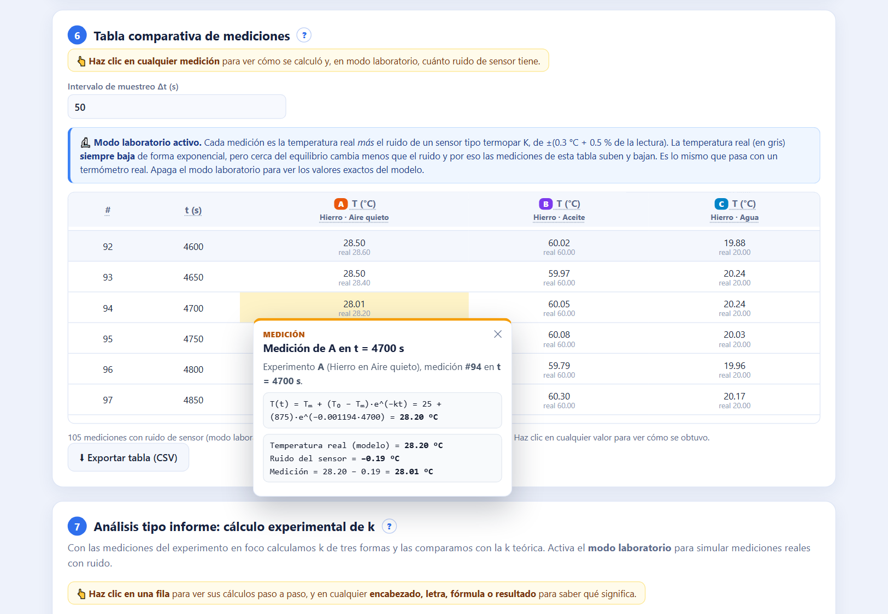
Calcula k a partir de las mediciones, como hizo el profesor con el café, y la compara con la k teórica.
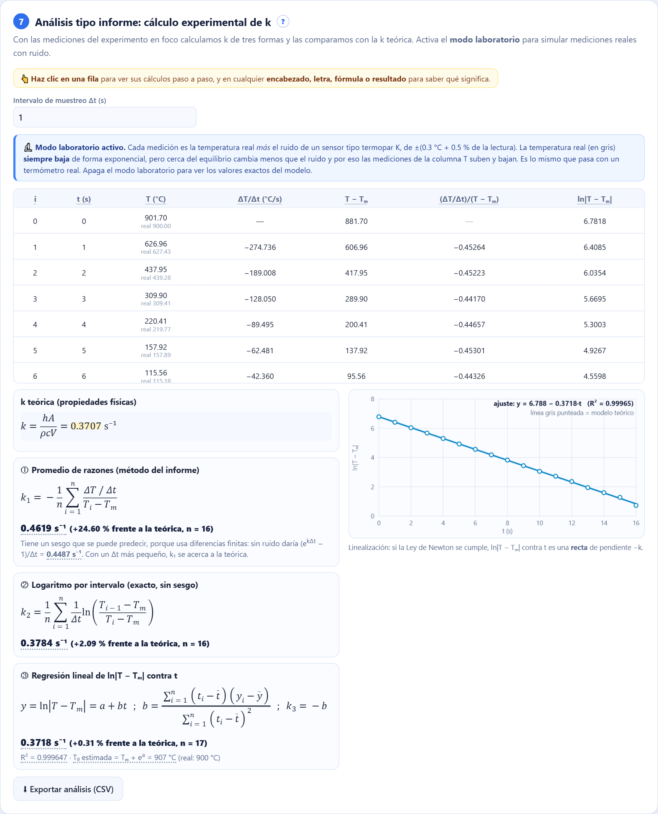
| Columna | Significado |
|---|---|
| ΔT/Δt | Rapidez medida entre dos mediciones seguidas. |
| T − Tₘ | Diferencia con el medio. |
| (ΔT/Δt)/(T − Tₘ) | La razón del informe; su promedio da −k. |
| ln|T − Tₘ| | Logaritmo que convierte la exponencial en una recta. |
| n/d | “No disponible”: la pieza está tan cerca de Tₘ que el cálculo no es confiable (diferencia menor que 0.5 °C o que 4 veces el ruido). |
El método del informe. Es sencillo, pero tiene un sesgo predecible por usar diferencias finitas: sin ruido daría (ekΔt − 1)/Δt, un poco mayor que k. El simulador muestra ese valor esperado. Con un Δt más pequeño el sesgo baja.
Usa ln[(Ti−1 − Tₘ)/(Ti − Tₘ)]/Δt, que es exacto para una exponencial: sin ruido da la k teórica.
Ajusta una recta ln|T − Tₘ| = a + b·t por mínimos cuadrados: k = −b. Muestra R² (1 = recta perfecta) y la T₀ estimada a partir del intercepto.
Puntos = mediciones; línea de color = recta ajustada; línea gris = modelo teórico. Si la Ley de Newton se cumple, los puntos quedan sobre una recta.
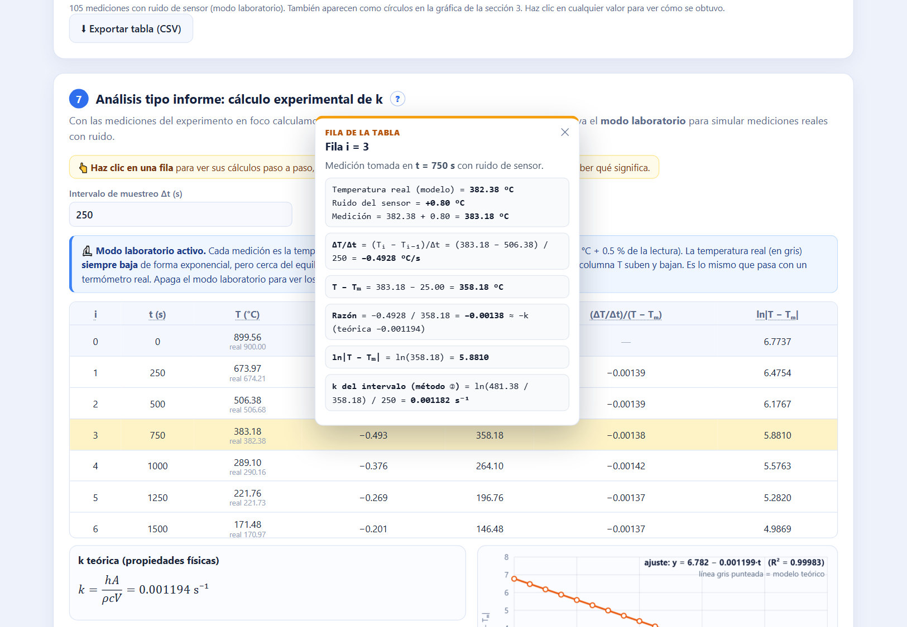
Los datos científicos que usa el simulador.
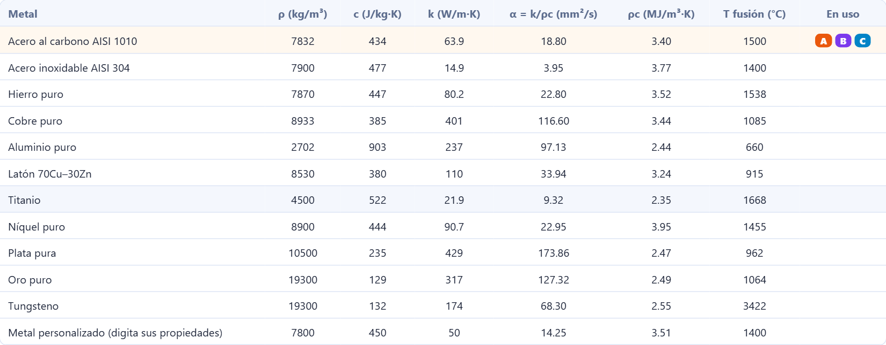
| Columna | Significado |
|---|---|
| ρ (kg/m³) | Densidad: masa por unidad de volumen. |
| c (J/kg·K) | Calor específico: energía para subir 1 kg en 1 °C. |
| k (W/m·K) | Conductividad térmica del metal; interviene en el número de Biot. |
| α = k/ρc | Difusividad térmica: qué tan rápido se reparte el calor dentro del metal. |
| ρc | Capacidad térmica por volumen: la que decide k en la Ley de Newton. |
| T fusión | Punto de fusión; se usa para validar los datos. |
| h típico / rango | Coeficiente de convección del medio y su rango habitual. |
| Ebullición / capa de vapor | Temperaturas de superficie a partir de las cuales hay burbujas o una película de vapor. |
| En uso | Letras de los experimentos que usan esa fila. |
Fuentes: Incropera, DeWitt, Bergman & Lavine, Fundamentals of Heat and Mass Transfer, Tabla A.1 (propiedades a 300 K) y Tabla 1.1 (rangos de h); ASM Handbook, Vol. 4 (medios de temple).
Entender dónde deja de aplicar la ley también es parte de entenderla.
La Ley de Newton supone que toda la pieza tiene una sola temperatura. Eso es cierto si el calor viaja dentro del metal mucho más fácil de lo que sale por la superficie:
Bi = h·Lc / kmetal < 0.1 ⟹ modelo válido
Con Bi ≥ 0.1 el núcleo queda más caliente que la superficie. El simulador lo estima con la solución de un término del cilindro: resuelve ζ₁·J₁(ζ₁)/J₀(ζ₁) = hR/kmetal con funciones de Bessel y dibuja el gradiente dentro de la pieza.
Una demostración de unos 7 minutos que muestra todo lo importante.
0:00Presentación. Abrir ley-enfriamiento.vercel.app, presentar a los autores y la idea: “aplicamos la Ley de Newton al temple de metales, con datos reales”.
0:30Temple clásico. Pulsar el escenario y luego ▶ Iniciar. Señalar el color real del acero, las flechas rojas de calor saliendo y las etapas del agua: capa de vapor → ebullición → convección. Pausar cuando el agua esté hirviendo.
1:30Gráfica. Mostrar las tres curvas y la asíntota Tₘ. Activar la escala logarítmica para comparar agua contra aire.
2:30Matemática. Poner en foco el experimento C y recorrer el paso 2 (k a partir de propiedades), los pasos 4–5 (integral y despeje), el paso 7 (derivadas) y el paso 8 (la integral de energía = área de la sección 4). Digitar una T* en el paso 9.
4:00Informe. Activar el modo laboratorio y mostrar los tres métodos para calcular k, el sesgo del método de razones y la recta de linealización con su R².
5:00Sorpresas. Duelo de metales (el aluminio gana por su ρ·c), Ganar calor (flechas doradas), Criogenia y la vista de cámara térmica. Probar aluminio a 900 °C para mostrar la validación del punto de fusión.
6:30Cierre. Sección 9: el número de Biot y los límites del modelo. “Entender dónde deja de valer la ley también es parte de entenderla.”
Preguntas para practicar, con la respuesta esperada.
| Prueba | Qué debería pasar |
|---|---|
| Duplicar el diámetro D | Lc casi se duplica, así que k baja a casi la mitad y la pieza tarda el doble. Biot se duplica. |
| Duplicar h (agua de 3000 a 6000) | k se duplica y τ se reduce a la mitad; Biot también se duplica. |
| T* a la mitad entre T₀ y Tₘ | t* = t½ = ln 2 / k. |
| Aluminio a 700 °C | El simulador lo bloquea: el aluminio se funde a 660 °C. |
| Agua contra salmuera | La salmuera no muestra capa de vapor y enfría más rápido. |
| Δt grande en el análisis | El método ① se aleja de la k teórica; los métodos ② y ③ no. |
| Pieza fría en el horno | La curva sube, es cóncava hacia abajo y las flechas apuntan hacia la pieza. |
| Inox 304 contra acero 1010 en agua | Casi la misma k, pero el inox tiene un Biot mucho mayor (conduce peor), así que su núcleo queda más caliente. |
| Término | Definición |
|---|---|
| Ley de Enfriamiento de Newton | La rapidez de cambio de la temperatura de un cuerpo es proporcional a su diferencia con el medio. |
| Tₘ | Temperatura del medio (aire, baño u horno). |
| k | Constante de enfriamiento (s⁻¹). Cuanto mayor, más rápido el cambio. |
| τ (tau) | Constante de tiempo, 1/k: la diferencia cae al 37 %. |
| t½ | Vida media, ln 2/k: la diferencia cae a la mitad. |
| h | Coeficiente de convección (W/m²·K): qué tan bien el fluido intercambia calor con la superficie. |
| ρ, c | Densidad y calor específico del metal. |
| Lc | Longitud característica V/A de la pieza. |
| Número de Biot | hLc/kmetal: compara la resistencia interna con la externa al paso del calor. |
| Capacidad concentrada | Suponer que toda la pieza tiene una sola temperatura (válido si Bi < 0.1). |
| Temple | Enfriar rápido un acero caliente para endurecerlo. |
| Leidenfrost | Película de vapor que se forma entre una superficie muy caliente y un líquido, y que aísla la pieza. |
| Ebullición nucleada | Formación de muchas burbujas en la superficie; extrae mucho calor. |
| Convección | Transporte de calor por el movimiento del fluido (natural o forzada). |
| Punto de Draper | Unos 525 °C: temperatura a la que los sólidos empiezan a brillar visiblemente. |
| Ironbow | Paleta de colores típica de las cámaras térmicas. |
La temperatura real siempre baja de forma exponencial, y es el valor gris debajo de cada medición. Lo que sube y baja es la medición, porque el modo laboratorio le suma el ruido de un sensor real, de ±(0.3 °C + 0.5 % de la lectura). Al principio la pieza baja muchos grados en cada intervalo y el ruido no se nota. Cerca del equilibrio, en cambio, baja apenas unas décimas de grado, menos que el ruido, y por eso algunas mediciones parecen subir. Es exactamente lo que pasa con un termómetro de verdad. Haz clic en la medición para ver cuánto es la temperatura real y cuánto es ruido. Con el modo laboratorio apagado, los valores bajan siempre.
Algún dato no es físicamente posible, por ejemplo una temperatura sobre el punto de fusión o bajo el cero absoluto. Lee el mensaje, corrige el dato y la tarjeta vuelve a funcionar.
Usa la velocidad manual con un multiplicador bajo (×0.5 o ×1), o pausa en cuanto empiece. El agua enfría una pieza delgada en segundos: es física real.
En modo automático la velocidad aumenta sola. También puedes subir el multiplicador manual hasta ×1000.
Aparecen cada Δt de la tabla comparativa. Si Δt es grande aún no hay mediciones; reduce Δt en la sección 6.
La pieza ya está casi a la temperatura del medio y la razón no es confiable. Es normal al final del experimento.
En el modelo de capacidad concentrada solo importan h, la geometría y ρ·c. La conductividad aparece en el número de Biot, que dice si ese modelo es válido.
Sí. Descarga el proyecto y abre index.html con doble clic; no usa librerías externas.